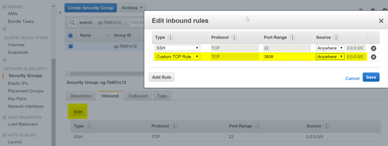

기계학습
스파크 EC2 클러스터 - 데이터과학 툴체인(R, sparklyr)
학습 목표
- AWS 위에 생성된 스파크 EC2 클러스터에 데이터 과학 툴체인을 구축한다.
- R, RStudio 서버, sparklyr 혹은 sparkr 데이터 과학 툴체인을 설치한다.
- 사용자를 등록시키고 포트(port)를 열어 웹인터페이스를 통해 데이터 과학을 위한 환경을 구축한다.
스파크 EC2 클러스터 - 데이터과학 툴체인(R, sparklyr) 구축 1 2 3
R 설치
아마존 AMI 이미지로 리눅스를 설치했다면 R 설치를 시작한다. Curl, OpenSSL이 사전에 설치되어야 함. 다양한 R 팩키지를 설치하는데 httr, curl이 운영체제에 설치된 소프트웨어를 활용하여 작업을 수행하기 때문.
$ sudo yum update
$ sudo yum install R
$ sudo yum install libcurl libcurl-devel # Curl이 사전에 설치되어야 함.
$ sudo yum install openssl openssl-devel # OpenSSL이 사전에 설치되어야 함.RStudio 서버 설치
로컬 컴퓨터에서 RStudio를 설치해서 사용하는 것이 아니라 원격으로 AWS 클라우드에 설치된 RStudio를 사용할 것이기 때문에 RStudio Preview 혹은 RStudio 배포 버젼을 설치한다.
$ [ec2-user@ip-172-31-30-45 ~]$ wget https://s3.amazonaws.com/rstudio-dailybuilds/rstudio-server-rhel-1.0.136-x86_64.rpm
$ sudo yum install --nogpgcheck rstudio-server-rhel-1.0.136-x86_64.rpm설치가 끝났으며… RStudio 서버에 접속할 수 있도록 물론 웹으로 … 사용자를 등록한다.
ssh 비밀키로 로그인 했다면 ec2-user에 대한 비번이 설정되어 있지 않기 때문에 비밀번호를 설정한다. 여러명이 스파크 EC2 클러스터를 사용하는 경우 사용자를 추가(xwmooc)로 추가하고 비번을 설정한다. 추가 사용자도 동일한 환경을 사용할 수 있도록 환경설정과 관련된 파일을 복사를 한다.
$ sudo passwd ec2-user # 비밀번호 설정
$ sudo useradd xwmooc # 사용자 추가
$ sudo passwd xmmooc
$ cd /home/ec2-user # 추가 사용자에 대한 환경설정
$ sudo cp -r spark /usr/local/libAWS 스파크 EC2 클러스터 RStudio 서버 접속
AWS 스파크 EC2 클러스터 RStudio 서버 접속하기 위해서 몇가지 추가 작업이 더 필요하다. 가장 먼저 ssh 포트를 열어 놔서 putty나 리눅스 CLI를 사용할 수 있도록 한다. Installing RStudio Shiny Server on AWS에서 Shiny 서버를 설정하듯이 ssh 포트번호 22, rstudio 서버 포트번호 8787 를 설정해야 접속할 수 있다.

그리고 나서 웹브라우져를 열고 http://ec2-52-XXX-XX-X15.ap-northeast-1.compute.amazonaws.com:8787 주소를 입력하면 RStudio IDE 작업환경으로 들어가게 된다. 8787 포트번호를 제외한 http://ec2-52-XXX-XX-X15.ap-northeast-1.compute.amazonaws.com 주소는 스파크 EC2 클러스터 마스터 노드를 클릭하면 EC2 Dashboard → INSTANCES → Instances 화면에서 스파크 클러스터 EC2 마스터를 클릭하면 Public DNS (IPv4) 에 웹주소가 나온다. 이를 복사하고 포트번호 8787 붙여 접속하면 로그인 화면이 나오고 준비된 사용자명과 비번을 입력하면 바로 R로 작업할 수 있는 작업환경이 나타난다.